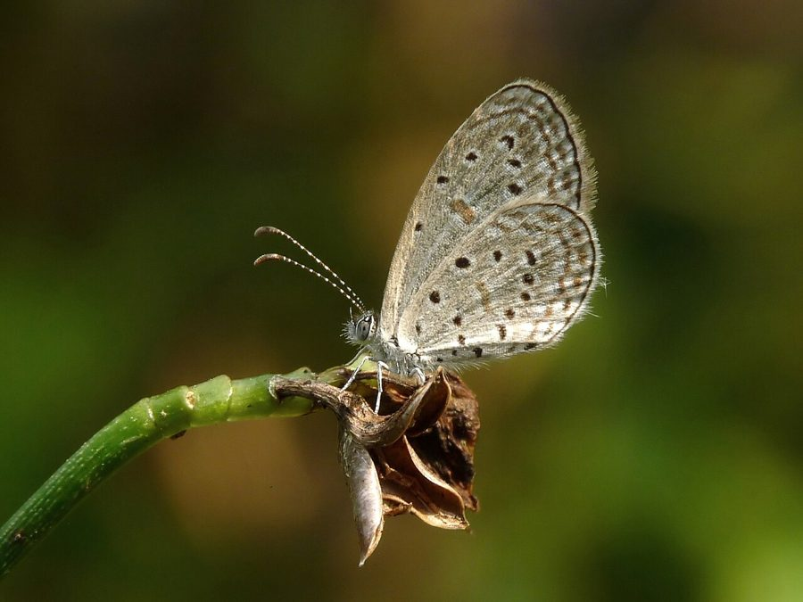

टाइनी ग्रास ब्लू तितलीTiny Grass Blue
Zizula hylax · Lycaenidae · INS-0191

- Scientific name वैज्ञानिक नाम
- Zizula hylax (Fabricius, 1775)
- Family कुल
- Lycaenidae
- Hindi हिंदी
- टाइनी ग्रास ब्लू तितली
- Local names स्थानीय नाम
- tiny grass blue, gaika blue, chhota neela titli, tiny grass blue butterfly
- Status here यहाँ की स्थिति
- native
- Movement आवागमन
- Resident, here all year
- Known from कहाँ दर्ज
- Others have published records from the wider Awadh–Purvanchal plain, none yet from Basti–Ayodhya अवध–पूर्वांचल से दूसरों के प्रकाशित अभिलेख, बस्ती–अयोध्या से अभी नहीं
- IUCN IUCN
- LC
- Review समीक्षा
- not yet reviewed
When to look कब देखें
Present all year. साल भर मौजूद।
Uses and possibilities उपयोग और संभावनाएँ
Drawn from the documented uses in the profile below, where each is labelled traditional, current or a research lead. All uses →
Tell it apart from इनसे अलग पहचानें
टाइनी ग्रास ब्लू तितली / Tiny Grass Blue
Zizula hylax (Fabricius, 1775) — Lycaenidae
टाइनी ग्रास ब्लू तितली — हमारे इलाके और पूरे भारत की सबसे नन्ही तितलियों में से एक है। यह घास के मैदानों, लॉन और खेतों की मेड़ों पर जमीन से मात्र कुछ इंच ऊपर फड़फड़ाती हुई उड़ती है। नर तितली ऊपर से हल्की बैंगनी-नीली होती है, जबकि मादा भूरे रंग की होती है। पंखों के नीचे छोटे-छोटे काले बिंदु होते हैं, जिनमें अगले पंख के बीच का बिंदु इसकी खास पहचान है। इसके कैटरपिलर रुएलिया और अन्य जंगली जड़ी-बूटियों पर पलते हैं।
Quick Identification त्वरित पहचान
| Feature | Description |
|---|---|
| Size | Minute butterfly; wingspan 14–20 mm (Kehimkar 2008) |
| Male Upperside | Pale violet-blue with narrow dark fuscous terminal margins (Evans 1932) |
| Female Upperside | Uniform dark greyish-brown with faint bluish sheen at wing base (Bingham 1907) |
| Underside Ground | Pale watery grey to delicate greyish-white (Bingham 1907) |
| Forewing Cell Spot | Conspicuous dark brown dot situated inside the discal cell (Wynter-Blyth 1957) |
| Hindwing Markings | Curved series of minute dark discal spots and submarginal lunules (Kehimkar 2008) |
| Flight Pattern | Extremely weak, fluttering flight right at turf level (Kunte 2000) |
Field tip: Watch closely over short lawn grass, grazing pastures, and field bunds. A minute bluish butterfly fluttering barely two to three inches above the ground, revealing an underside with a tiny black dot directly inside the forewing cell, is the Tiny Grass Blue.
हिंदी: यह भारत की सबसे छोटी तितलियों में से एक है। यह घास पर जमीन के बहुत पास उड़ती है। इसके पंखों के नीचे एक नन्हा काला बिंदु साफ नजर आता है।
Morphology आकारिकी
Biometrics recorded from adult specimens (Kehimkar 2008; Evans 1932):
| Measurement | Range | Source |
|---|---|---|
| Wingspan | 14–20 mm | Kehimkar (2008) |
Adult description: The Tiny Grass Blue is one of the smallest butterflies in the Indian subcontinent (Kehimkar 2008). It shows moderate sexual dimorphism and distinct seasonal polyphenism between wet-season and dry-season generations (Bingham 1907). In males, the upperside is delicate silky violet-blue, bordered by a narrow dark fuscous marginal line along the termen of both wings (Evans 1932). In females, the upperside is uniform dark smoky brown, occasionally displaying a faint dusting of violet-blue scales near the base of both wings (Bingham 1907).
The underside of both sexes is pale silvery-grey or dull greyish-white (Kehimkar 2008). The key diagnostic character separating Zizula from all related grass blue genera (Zizina and Zizeeria) is the presence of a distinct, small dark brown spot situated directly inside the discal cell of the forewing, positioned midway between the wing base and the discocellular crescent (Wynter-Blyth 1957). Beyond the cell lies an irregular transverse postdiscal series of minute dark brown spots, followed by a double submarginal row of faint lunules (Bingham 1907).
The hindwing underside carries three subbasal dark dots, a discocellular crescent, and an irregular, highly curved postdiscal series of dark spots (Bingham 1907). Antennae are short, black, finely ringed with pure white, and tipped with a flattened club (Bingham 1907).
Larval Stage इल्ली अवस्था
The full-grown caterpillar is tiny, onisciform, flattened, light green, and cloaked in dense, short whitish setae (Kunte 2000). A dark green pulsating dorsal vessel runs down the back, bordered by faint paler lateral lines. The pupa is pale green or light greyish-brown with darker specks, attached horizontally to a low leaf or stem by a fine silk girdle (Kehimkar 2008).
हिंदी: इसका शरीर मात्र कुछ मिलीमीटर लंबा और पंखों का फैलाव 14 से 20 मिमी होता है। ऊपरी पंख बैंगनी-नीले और नीचे के पंख हल्के सलेटी होते हैं जिन पर बारीक काले बिंदु होते हैं।
Behaviour & Ecology व्यवहार और पारिस्थितिकी
The Tiny Grass Blue is an ubiquitous resident of sunny, open, herbaceous habitats across both rural and urban landscapes (Kehimkar 2008). It frequents village greens, sports fields, road verges, fallow fields, and open pastures where prostrate weeds and clover thrive (Kunte 2000). Its flight is exceptionally weak and fluttering, rarely ascending more than thirty centimetres above the turf (Wynter-Blyth 1957). Even moderate wind forces the butterfly to stay grounded deep among grass blades.
Adults are active throughout sunny hours, basking with wings partially open at an angle of roughly thirty degrees to absorb warmth from the morning sun (Kunte 2000). They obtain nectar from the tiniest creeping flowers that larger butterflies overlook, including prostrate legumes, Tridax procumbens, and small verbenas (Kehimkar 2008). Males also take up moisture from wet mud around village handpumps, cattle troughs, and leaking irrigation channels (Kunte 2000).
हिंदी: यह तितली खुली धूप और हरी घास पसंद करती है। इसकी उड़ान बहुत कमजोर होती है, इसलिए तेज हवा चलने पर यह घास के तिनकों के बीच छिप जाती है।
Life Cycle / Phenology जीवन चक्र
Seasonal phenology in northern Indian plains across the agricultural calendar (Kunte 2000; Kehimkar 2008):
| Season / Month | Stage | Field Observation |
|---|---|---|
| July–August (Kharif monsoon) | Egg & Larva | Multiple broods breeding on tender monsoon weeds (Kunte 2000) |
| September–November (Post-monsoon) | Adult peak | Enormous abundance in sunny village pastures and lawns (Kehimkar 2008) |
| December–January (Rabi winter) | Adult & Larva | Active during midday sunny spells; development slows |
| February–April (Spring / Zaid) | Adult peak | Spring generation active on flowering field weeds (Wynter-Blyth 1957) |
| May–June (Pre-monsoon summer) | Adult & Egg | Restricted to irrigated gardens and moist ditch edges (Kunte 2000) |
The female lays tiny, disc-shaped, delicately pitted white eggs singly on the flower buds or young shoots of low-growing host weeds (Kunte 2000). Hatching occurs in a few days. The caterpillar bores into flower buds or feeds on tender leaf tissue, completing its larval growth in a few weeks (Kunte 2000). The pupal phase lasts about a week before adult emergence. Because of this rapid developmental cycle, continuous overlapping generations occur throughout the year.
हिंदी: यह तितली साल भर लगातार अंडे देती है। इसका जीवन चक्र बहुत तेज होता है और कुछ हफ्तों में अंडे से वयस्क तितली तैयार हो जाती है।
Host Plants or Prey आहार
Documented larval host plants from published Indian lepidopteran accounts (Kunte 2000; Kehimkar 2008):
- Dipteracanthus prostratus (family Acanthaceae) — prostrate perennial herb of grassy wastelands (Kunte 2000).
- Ruellia tuberosa (family Acanthaceae) — naturalized herb widely utilized in gardens and road edges.
- Justicia procumbens (family Acanthaceae) — low field-margin herb supporting larval broods (Kehimkar 2008).
Adults feed on the nectar of minute ground flowers, especially Tridax procumbens (Tridax Daisy), Cynodon dactylon inflorescences, and creeping verbenas (Kehimkar 2008).
हिंदी: इसके कैटरपिलर रुएलिया और अकैन्थेसी कुल की छोटी जंगली जड़ी-बूटियों की कोमल पत्तियों और कलियों को खाते हैं। वयस्क तितलियाँ छोटे घास के फूलों से रस लेती हैं।
Predators / Natural Enemies शत्रु
Common insectivorous predators of the Gangetic plain likely to take minute lycaenids:
- Insects: Predatory robber flies (Asilidae), ambush bugs (Phymatinae), and adult dragonflies hunt adults hovering over turf.
- Spiders: Wolf spiders (Lycosidae) and small jumping spiders (Salticidae) ambush adults resting on ground vegetation.
- Birds: Ground-feeding birds, such as pipits, wagtails, and prinias, readily pick adults off grassy lawns.
- Parasitoids: Trichogrammatid micro-wasps attack the minute eggs; braconids parasitise the caterpillars.
हिंदी: भेड़िया मकड़ियाँ, छोटी शिकारी मक्खियाँ और जमीन पर चरने वाली छोटी चिड़ियाँ (जैसे पिपिट और खंजन) इस नन्ही तितली को खाती हैं।
Agricultural / Human Relevance कृषि प्रासंगिकता
Beneficial role: The Tiny Grass Blue is entirely benign to crops and horticultural plantings (Kunte 2000). Its larvae feed exclusively on small prostrate weeds and wild herbs such as Dipteracanthus and Ruellia, causing no injury to cereals, pulses, or vegetables.
Urban and rural biodiversity: It represents one of the most resilient native insects in anthropogenic environments, thriving in heavily trodden village yards, school grounds, and agricultural bunds where few other butterflies can persist (Kehimkar 2008).
Traditional: No traditional medicinal, economic, or cultural uses are documented.
Today: Valued as a pollinator of low-growing herbaceous wildflowers and a model organism for micro-scale urban biodiversity studies.
Research direction (a lead, not a result): Assessing whether the density of Tiny Grass Blue populations in agricultural borders reflects low insecticide drift from adjoining crop fields.
हिंदी: यह तितली फसलों को कोई नुकसान नहीं पहुँचाती। यह खेतों की मेड़ों पर उगने वाली फालतू खरपतवार पर पलती है और नन्हे जंगली फूलों में परागण करती है।
Expected Locally स्थानीय रूप से अपेक्षित
Not a field record. Written from published accounts for eastern Uttar Pradesh. No confirmed local sighting yet — if you have seen it, that is what the atlas needs.
अभी तक स्थानीय पुष्टि नहीं। यह विवरण प्रकाशित स्रोतों से है, किसी अवलोकन से नहीं।
The Tiny Grass Blue is expected throughout eastern Uttar Pradesh in open grassy pastures, on unpaved village tracks, along field bunds, and on sunny lawn patches. Look for minute blue butterflies fluttering weakly just above the soil among prostrate weeds from August through November. GBIF holds published records from the wider Awadh–Purvanchal plain, none yet from Basti–Ayodhya. A photograph with date and location, submitted through the About page, would confirm the first local documentation for the district.
Distribution वितरण
Global range: Extremely widespread across the Old World, occurring throughout Africa, the Arabian Peninsula, South and Southeast Asia, southern China, and extending into Australia and the southwestern Pacific (Bingham 1907).
In India: Found ubiquitously across the entire mainland, including the Western and Eastern Ghats, central India, the Himalayas up to moderate elevations, and throughout the northern alluvial plains (Evans 1932; Kehimkar 2008).
In Uttar Pradesh: Recorded across every surveyed district in open habitats, agricultural borders, rural settlements, and urban parklands.
In Basti district / eastern UP: Expected as an abundant resident breeding species wherever low-growing herbaceous ground cover persists.
हिंदी: यह तितली पूरे भारत, अफ्रीका और दक्षिण-पूर्व एशिया में पाई जाती है। उत्तर प्रदेश के लगभग हर जिले के मैदानों और बगीचों में यह मिलती है।
Research Questions शोध प्रश्न
- What micro-herb species provide the primary nectar source for the Tiny Grass Blue in heavily grazed village pastures? / चरने वाले मैदानों में इस नन्ही तितली को किन छोटे फूलों से सबसे अधिक रस मिलता है?
- Does the presence of a spot in the forewing cell vary in size between monsoon and winter broods?
- How severely do broadcast chemical weedicides on field bunds depress local Tiny Grass Blue populations? / मेड़ों पर खरपतवार नाशक दवाएं छिड़कने से इस तितली की संख्या कितनी घटती है?
- What proportion of eggs laid on Dipteracanthus successfully complete development to the adult stage?
- How does ground-level wind velocity influence the daily duration of mating flights over open lawns?
Similar Species मिलती-जुलती प्रजातियाँ
| Species | How to tell apart | हिंदी | |
|---|---|---|---|
| Zizina otis ([[lesser_grass_blue\ | Lesser Grass Blue]]) | Slightly larger; forewing cell underside completely lacks a central dark spot | लेसर ग्रास ब्लू — पंख के बीच कोई बिंदु नहीं |
| Zizeeria karsandra ([[dark_grass_blue\ | Dark Grass Blue]]) | Forewing cell has a spot, but upperside is darker violet with broader margins; hindwing spot pattern differs | डार्क ग्रास ब्लू — गहरा बैंगनी रंग |
| Pseudozizeeria maha ([[pale_grass_blue\ | Pale Grass Blue]]) | Distinctly larger; male upperside is glistening pale silvery-blue | पेल ग्रास ब्लू — बड़ी और रूपहली नीली |
| Neopithecops zalmora ([[quaker\ | Quaker]]) | Underside creamy white without rows of dark ocelli; flies exclusively in deep forest shade | क्वेकर — सादा सफेद निचला हिस्सा |
Field rule: The tiniest blue butterfly fluttering just inches above village lawns and weed patches, displaying a distinct dark dot inside the forewing cell on its pale underside, is the Tiny Grass Blue.
हिंदी: लेसर ग्रास ब्लू के पंख के नीचे के घेरे में कोई काला बिंदु नहीं होता, जबकि टाइनी ग्रास ब्लू के पंख के बीच एक साफ काला बिंदु होता है।
Taxonomy & Classification वर्गीकरण
Original description. Described by Johan Christian Fabricius in 1775 as Papilio hylax in Systema Entomologiae, page 526. Type locality: "in India orientali" (East Indies).
Subspecies. Multiple geographic subspecies occur across its massive Old World range. The population inhabiting the Indian subcontinent is recognized as the nominotypical subspecies Zizula hylax hylax (Fabricius, 1775).
Family and order placement. Order Lepidoptera, family Lycaenidae, subfamily Polyommatinae, tribe Polyommatini. The genus Zizula Chapman, 1910, contains tiny lycaenids distinguished by genitalic structure and wing venation.
Phylogenetic notes. Zizula is closely related to Zizina, Zizeeria, and Pseudozizeeria, forming the core of the small grass blue radiation adapted to herbaceous ground cover across tropical regions (Bingham 1907).
IUCN status rationale. Assessed as Least Concern (LC) on the IUCN Red List of Threatened Species (Edge & Westrip 2021). The species has an immense global range across multiple continents, exhibits remarkable adaptability to modified habitats, and has no recorded population declines.
हिंदी: इसका वैज्ञानिक नाम Zizula hylax है। IUCN की लाल सूची में इसे न्यूनतम चिंता (Least Concern) श्रेणी में रखा गया है क्योंकि यह अत्यंत व्यापक और सुरक्षित है।
Photo Gallery फोटो गैलरी
No photos yet — add field photos to media/species/tiny_grass_blue/ and run node scripts/sync_photos.js.
Photos needed आवश्यक फोटो
- [ ] Adult basking on ground showing male violet-blue upperside (जमीन पर पंख फैलाए नर तितली)
- [ ] Underside showing diagnostic black spot in forewing cell (पंख के घेरे का काला बिंदु दिखाता निचला हिस्सा)
- [ ] Tiny caterpillar on Dipteracanthus or Ruellia (रुएलिया पर छोटी इल्ली)
- [ ] Adult taking nectar from miniature weed flower (घास के नन्हे फूल पर रस पीती तितली)
References संदर्भ
- Fabricius, J. C. (1775). Systema Entomologiae. Officina Libraria Kortii, Flensburgi et Lipsiae, p. 526.
- Bingham, C. T. (1907). The Fauna of British India, Including Ceylon and Burma. Butterflies, Vol. 2. Taylor and Francis, London, pp. 358–359.
- Evans, W. H. (1932). The Identification of Indian Butterflies. 2nd edition. Bombay Natural History Society, Mumbai, p. 222.
- Wynter-Blyth, M. A. (1957). Butterflies of the Indian Region. Bombay Natural History Society, Mumbai, pp. 284–285.
- Kehimkar, I. (2008). The Book of Indian Butterflies. Bombay Natural History Society and Oxford University Press, Mumbai, p. 260.
- Kunte, K. (2000). Butterflies of Peninsular India. Universities Press, Hyderabad, pp. 116–118.
- Varshney, R. K. & Smetacek, P. (2015). A Synoptic Catalogue of the Butterflies of India. Butterfly Research Centre, Bhimtal and Indinov Publishing, New Delhi, p. 135.
- Edge, D. A. & Westrip, J. R. S. (2021). Zizula hylax. The IUCN Red List of Threatened Species 2021: e.T161317749A161317758.
- GBIF Occurrence Data — Zizula hylax, India (2025).
Source file: species/fauna/insects/tiny_grass_blue.md